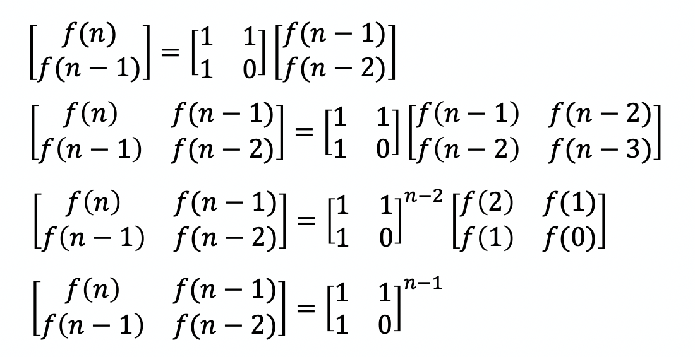

How can we solve Fibonacci number as fast as possible?
- Code examples here are written in Python.
The most natural way to do this is using recursive function calls:
def fib(x):
if x == 0:
return 0
elif x == 1:
return 1
else:
return fib(x - 1) + fib(x - 2)
If we treat an addition as the basic calculation unit, we get an interesting conclusion: time complexity T(n) = O(fib(n - 1)) = O(1.618^n). Considering function call overheads in addition, this method is rather inefficient.
If we simply transform the recursion to iteration, the time complexity reduces to linear T(n) = O(n):
def fib(x):
a = 0
b = 1
for i in range(2, x + 1):
b = a + b
a = b - a
return b
Can it be even faster?
There is a general formula for Fibonacci number calculation, with which it's easy to write the code:
def fib(x):
sqrt5 = 5 ** 0.5
return int(1 / sqrt5 * (((1+sqrt5) / 2) ** x - ((1-sqrt5)/2) ** x))
It seems to be a O(1) solution, since pow(x, y) is of O(1) on modern CPU architectures. But if the number is too large, we have to implement the exponentiation manually. Luckily, there is a method called "exponentiation by squaring"（快速幂）, based on a divide-and-conquer strategy, that we can use to achieve O(log(n)) complexity.
Can we avoid floating point calculation, while keeping the O(log(n)) time complexity? The answer is yes:
To get the value of f(n), we need to perform exponentiation on the matrix, and obtain the first element of the result. With the same divide-and-conquer idea, this can be optimized to O(log(n)) as well.
Code:
import numpy as np
def fib(x):
result = np.array([[0, 1], [0, 1]])
power = np.array([[1, 1], [1, 0]])
while (x):
if x & 1:
result = result.dot(power)
x = x >> 1
power = power.dot(power)
return result[0][0]